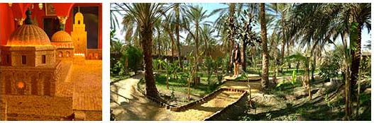
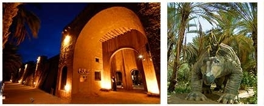

Présentation Dar chraiet
|
|

|

|
Situé en face de l’hôtel du même nom, le musée « Dar Cheraït » reconstitue la demeure traditionnelle d’un noble de la classe supérieure du pays.
Sont également exposées, des collections de poteries, de bijoux traditionnels, de peintures contemporaines, ainsi que diverses pièces d’artisanat.
Un spectacle son et lumière a lieu le soir dans le musée, sur le thème des mille et une nuit.
« Dar Zamen » est une remonte à travers les siècles et les millénaires et raconte, en sons et images, la mémoire du temps ou la mémoire d’antan.
La médina des « 1001 nuits » vous ouvre un monde imaginaire.
Dans un jardin luxuriant, escarpé et touffu, bruissant de fontaines, peuplé d’animaux, vous attendent tous les personnages qui ont animé les veillées de votre enfance: Sindbad le marin, Ali Baba ou Aladin.
|